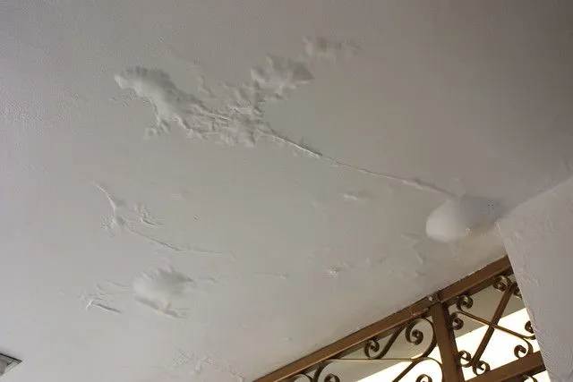
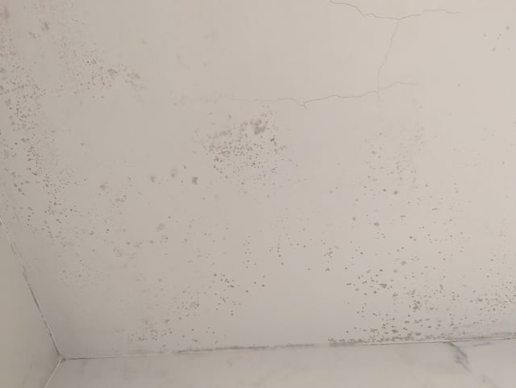

Ceiling Leak Every Time It Rains?
Active ceiling leaks need immediate attention. Get connected with contractors who can find the source and provide permanent solutions.
This Is an Emergency
Active ceiling leaks cause damage with every rain. Quick action prevents mold, structural damage, and electrical hazards.
Why Your Ceiling Leaks When It Rains
If water consistently appears in the same spot during rain, you have an active roof leak. The water might be traveling from far away before appearing on your ceiling. Common sources include:
- Missing or damaged shingles - allowing direct water entry
- Failed flashing - around chimneys, vents, or roof edges
- Clogged gutters - causing water backup under shingles
- Ice dam damage - from previous winter weather
- Aged roof materials - that have reached end of life
Immediate Steps to Take:
- Protect your belongings - move furniture and electronics away from leak
- Collect the water - use buckets or tarps to prevent floor damage
- Document everything - photos of leak, damage, and any exterior issues you can see
- Call for professional help - leak detection often requires roof access and experience
Why You Need Professional Leak Detection
Finding the actual source of a roof leak is trickier than most homeowners expect:
Water travels before dripping
The leak source might be 10+ feet away from where you see water
Safe roof access required
Professional safety equipment and experience prevent accidents
Proper repair techniques
Temporary fixes often fail - you need permanent solutions
Insurance documentation
Professionals know how to document damage for insurance claims
Signs of Active Roof Leaks

Water Pooling in Paint
Water pooling and bubbling in latex paint indicates an active roof leak that requires immediate professional intervention. Our certified contractors can quickly identify the source and coordinate with your insurance company to ensure complete coverage for both emergency repairs and long-term solutions.

Brown Water Stains
Brown or yellow discoloration on ceilings indicates water has penetrated through roof materials and ceiling insulation, often from missing shingles or damaged flashing. Our certified contractors can identify the exact source of these leaks and work with your insurance company to secure maximum coverage for repairs.

Early Stage Discoloration
Gray or dark patches on ceiling paint often appear before visible brown stains, indicating the early stages of water infiltration that requires immediate attention. Catching damage at this stage with our certified contractors can prevent costly structural repairs and ensure your insurance claim covers all necessary work.

Metal Component Rust Stains
Orange or rust-colored streaks usually indicate water is contacting metal roof components or nails, suggesting structural penetration requiring urgent repair. Our experienced contractors know how to document this type of damage to maximize your insurance settlement and prevent further deterioration.

Mold Growth
Dark spots or fuzzy growth around leak areas indicates mold formation from sustained moisture, creating serious health hazards that require immediate remediation. Our certified contractors can assess the full extent of mold damage and work with your insurance company to ensure complete coverage for both water damage repairs and necessary mold remediation.
Stop the Leak - Get Emergency Help
Connect with contractors who specialize in leak detection and emergency roof repairs.
Emergency contractors available. We'll connect you within 2 hours.